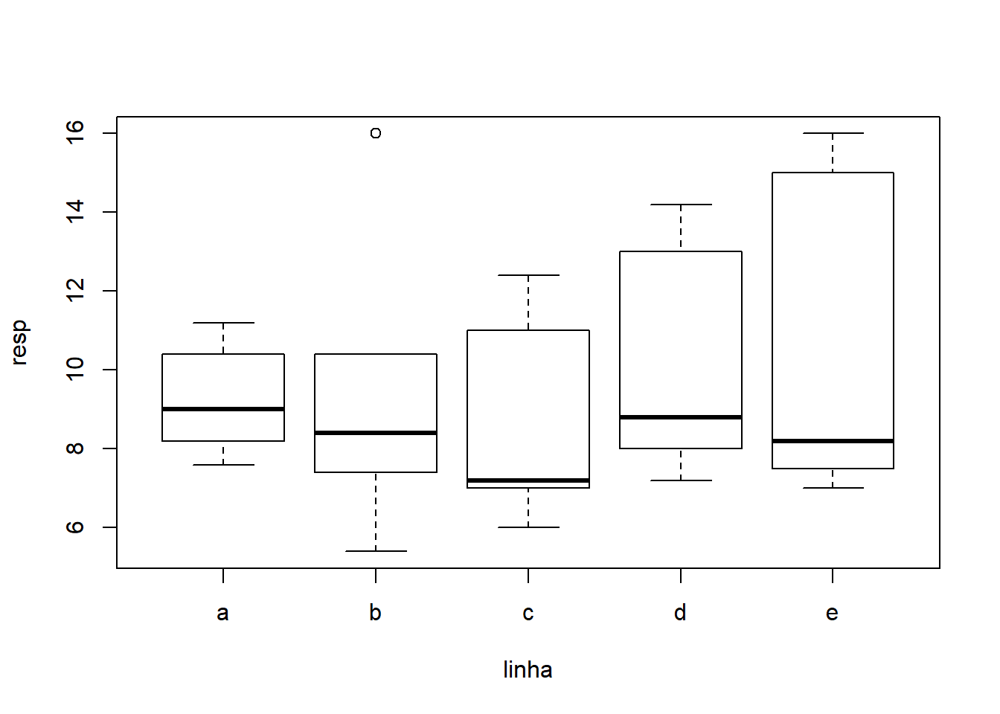

Delineamento em Quadrado Latino
Adilson dos anjos
Inserção de dados
lat01 <- read.table("latino.txt", header=T)
library(knitr)
library(magrittr)
library(kableExtra)
lat01 %>%
kable() %>%
kable_styling()| col | linha | trat | resp |
|---|---|---|---|
| a | a | B | 7.6 |
| a | b | C | 10.4 |
| a | c | A | 6.0 |
| a | d | D | 8.8 |
| a | e | E | 15.0 |
| b | a | A | 8.2 |
| b | b | B | 5.4 |
| b | c | D | 7.2 |
| b | d | E | 13.0 |
| b | e | C | 16.0 |
| c | a | D | 10.4 |
| c | b | E | 16.0 |
| c | c | B | 7.0 |
| c | d | C | 14.2 |
| c | e | A | 7.0 |
| d | a | E | 11.2 |
| d | b | A | 7.4 |
| d | c | C | 11.0 |
| d | d | B | 7.2 |
| d | e | D | 8.2 |
| e | a | C | 9.0 |
| e | b | D | 8.4 |
| e | c | E | 12.4 |
| e | d | A | 8.0 |
| e | e | B | 7.5 |
Explorando os dados
## [1] "col" "linha" "trat" "resp"## col linha trat resp
## a:5 a:5 A:5 Min. : 5.4
## b:5 b:5 B:5 1st Qu.: 7.4
## c:5 c:5 C:5 Median : 8.4
## d:5 d:5 D:5 Mean : 9.7
## e:5 e:5 E:5 3rd Qu.:11.2
## Max. :16.0
## A B C D E
## 7.32 6.94 12.12 8.60 13.52## a b c d e
## 9.28 9.52 8.72 10.24 10.74## a b c d e
## 9.56 9.96 10.92 9.00 9.06Nos gráficos e resultados acima procuramos captar os principais aspectos dos dados bem como verificar se não há interação entre linhas, colunas e tratamentos, o que não deve acontecer neste tipo de experimento. A seguir vamos ajustar o modelo e obter outros resultados, incluindo a análise de resíduos e testes para verificar a validades dos pressupostos do modelo.
ANOVA
## Analysis of Variance Table
##
## Response: resp
## Df Sum Sq Mean Sq F value Pr(>F)
## col 4 12.376 3.094 1.0545 0.4201568
## linha 4 12.712 3.178 1.0832 0.4076844
## trat 4 174.704 43.676 14.8862 0.0001334 ***
## Residuals 12 35.208 2.934
## ---
## Signif. codes: 0 '***' 0.001 '**' 0.01 '*' 0.05 '.' 0.1 ' ' 1## [1] "coefficients" "residuals" "effects" "rank"
## [5] "fitted.values" "assign" "qr" "df.residual"
## [9] "contrasts" "xlevels" "call" "terms"
## [13] "model"Homocedasticidade, Normalidade e Independência
residuos <- (lat01.av$residuals)
par(mfrow=c(2,2))
plot(lat01$trat,residuos)
title("Resíduos vs Estágios \n Homocedasticidade")
preditos <- (lat01.av$fitted.values)
plot(residuos,preditos)
title("Resíduos vs Preditos \n Independência")
qqnorm(residuos,ylab="Residuos", main=NULL)
qqline(residuos)
title("Grafico Normal de \n Probabilidade dos Resíduos")
par(mfrow=c(2,1))respad <- (residuos/sqrt(anova(lat01.av)$"Mean Sq"[4]))
boxplot(respad)
title("Resíduos Padronizados - outliers")
outlier<-c(max(respad),min(respad))
outlier## [1] 1.506224 -1.506224Teste para Normalidade dos Resíduos
##
## Shapiro-Wilk normality test
##
## data: residuos
## W = 0.97093, p-value = 0.6688Como foi detectado efeito de tratamentos faz-se um teste de comparações múltiplas e encerra-se as análises desanexando o objeto do caminho de procura.
Teste para Comparações Múltiplas
## Tukey multiple comparisons of means
## 95% family-wise confidence level
## factor levels have been ordered
##
## Fit: aov(formula = resp ~ col + linha + trat)
##
## $trat
## diff lwr upr p adj
## A-B 0.38 -3.07303526 3.833035 0.9962902
## D-B 1.66 -1.79303526 5.113035 0.5626685
## C-B 5.18 1.72696474 8.633035 0.0033307
## E-B 6.58 3.12696474 10.033035 0.0004348
## D-A 1.28 -2.17303526 4.733035 0.7614286
## C-A 4.80 1.34696474 8.253035 0.0059762
## E-A 6.20 2.74696474 9.653035 0.0007407
## C-D 3.52 0.06696474 6.973035 0.0450085
## E-D 4.92 1.46696474 8.373035 0.0049627
## E-C 1.40 -2.05303526 4.853035 0.7006049